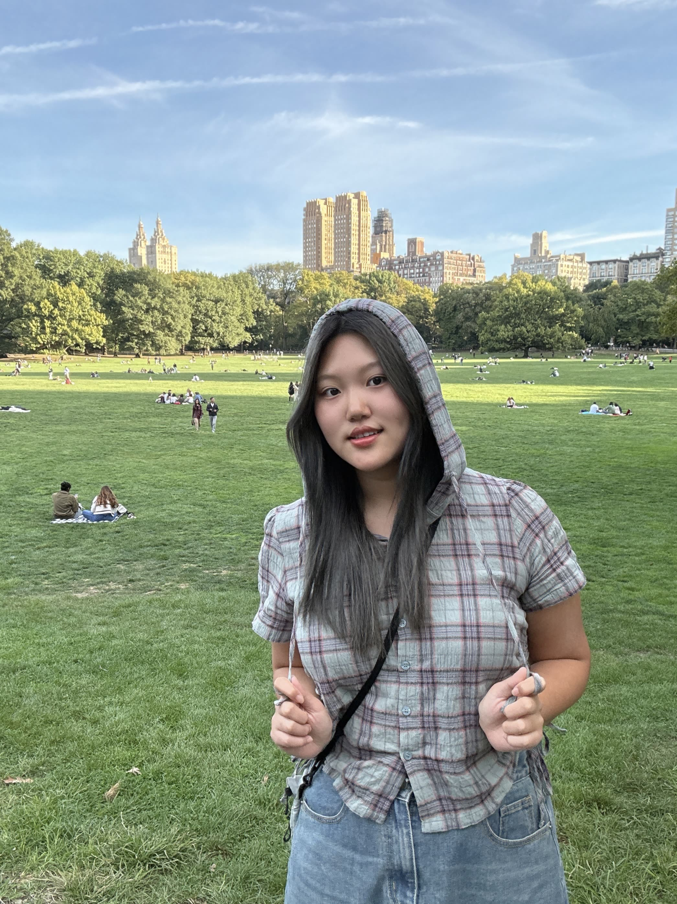

NC

Robotics · Embodied AI
Naeun Choi.
Research Intern · Visual Intelligence Group
Artificial Intelligence and Robotics Institute, Korea Institute of Science and Technology (KIST)
About
Building embodied robots that perceive, reason, and act in unfamiliar environments.
Autonomous navigationSpatial reasoningPhysical AI
Industry
KIST · Visual Intelligence Group
Research Intern · 2026–Present
KIST · Humanoid Robotics Lab
Summer Research Intern · 2024
Education
Kwangwoon University
B.Eng., Robotics Engineering
2026 · GPA 4.02/4.50
Selected work
Research & Projects
Select a project to explore its methods, results, photos and videos.
Research Experience
Selected Projects
Tools & Technologies
Skills
Embedded Systems & Edge Computing
Robotics Middleware
Simulation & 3D
Computer Vision & AI
Languages
Academic output
Publications
2024
Grasping Policy Using Human-Like Various Actions Based on Reinforcement Learning
E. Kim, H. Park, S. Yoo, N. Choi, W. Yang · ICROS 2024 · pp. 949–950 · Co-first authors
2024
Efficient Path Planning for Active 3D Reconstruction: An Approach Based on Cost Function Weight Adjustment
J. Wang, H. Park, J. Yeom, N. Choi, Y. Song, J. Oh · ICROS 2024 · pp. 472–473 · Co-second authors
Profile
Curriculum Vitae
Naeun Choi — CV
Research experience, publications, education, scholarships and technical skills.